- In the last webpage, we discussed
how to pass information
to a method
- I have
kept it (deliberately) simple
by using
constant values as
parameters:
r = ToolBox.min( 1.0, 4.0 ); - In this webpage, we
will discuss how to pass
information stored in variables
to a method.
Specifically, we will study the pass-by-value mechanism
- Consider the following program:
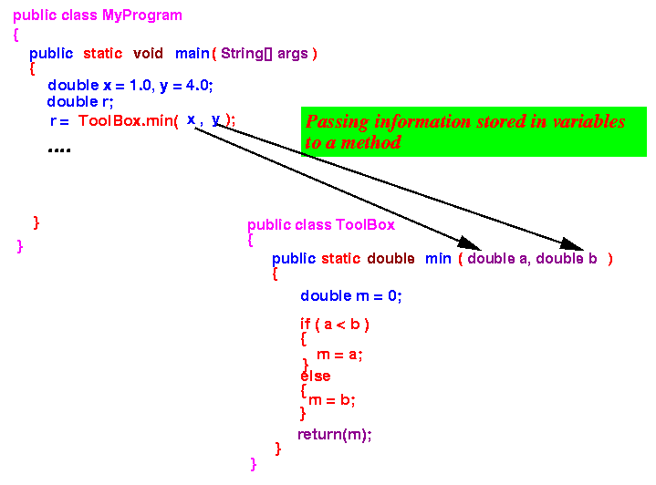
- Question to ponder:
- How can we pass (give) the information stored inside the variables x and y to the method ToolBox.min
There are quite a few ways to allow (enable) you to accomplish this "passing"
The possible answers ranges from simple to pretty weird
- Definitions:
- Formal parameter =
a parameter variable
- Actual parameter = a variable whose value is to be passed to some formal parameter
Illustrated example:
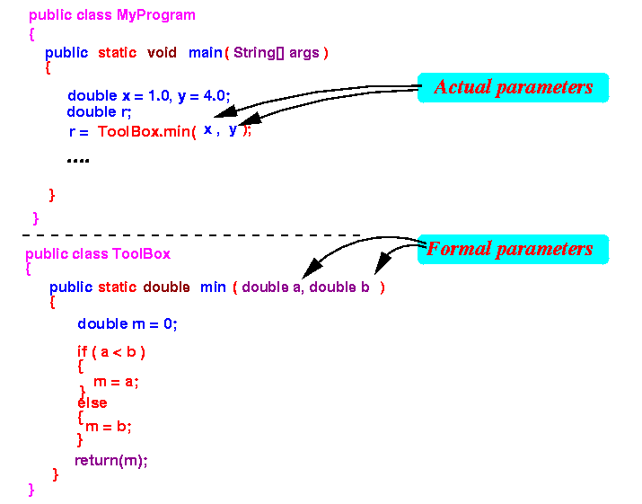 Explanation:
- The parameter variables a and
b in the definition of the
ToolBox.min method
are formal parameters
- The variables x and y used in the method invocation ToolBox.min(x, y) are actual parameters
- Formal parameter =
a parameter variable
- Definition:
- Parameter passing mechanism =
agreement between
the calling method and
the called method on
how a
parameter is
passed between them
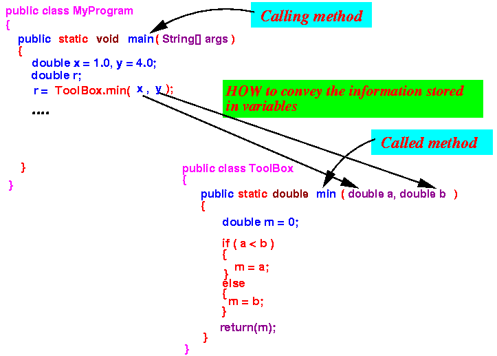
- Important note:
- Both the calling method and the called method must agree to use the same passing mechanism (or else, the information will be passed incorrectly)
- Parameter passing mechanism =
agreement between
the calling method and
the called method on
how a
parameter is
passed between them
- Most commonly used parameter passing mechanisms:
- Pass-by-value
- The calling method passes/copies the value stored inside a actual parameter variable into the formal parameter variable.
This is the most obvious way to pass information...
Example:
- if you want to give you phone number of your home to someone, you make a copy of the information (in the parameter variable)
- Pass-by-reference
- The calling method passes/copies the reference (location or address) of a actual parameter variable into the formal parameter variable.
This is a less obvious but more powerful way to pass information...
Example:
- if you want to give you
phone number of your home to
someone, you
give him/her the
address of your home
(that is the
reference in the formal parameter variable)
He/she can then go to the house (and go inside !) and find the phone number !!!
- Pass-by-value
- Terminology:
- A reference in Computer Science is the location (or address) (of a variable or a method)
- The Java programming language
uses only the
pass-by-value
mechanism.
- In the remainder of this
webpage, we will study the details
of the
pass-by-value mechanism.
In the next webpage, we will study the pass-by-reference mechanism.
- Recall:
- Parameter passing mechanism = agreement between the calling method and the called method on how a parameter is passed between them
- The agreement used in
the Pass-by-value mechanism:
- For the calling method:
- The calling method
creates
the parameter variables
for the called method,
.... and
- The calling method copies the value of the actual parameter into the formal parameter
- The calling method
creates
the parameter variables
for the called method,
.... and
- For the called method:
- The called method obtains the information directly from the parameter variables
- For the calling method:
- Example program:
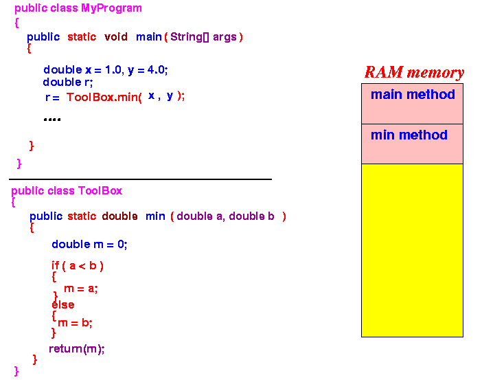
- When main starts running,
it will first create its
local variables:
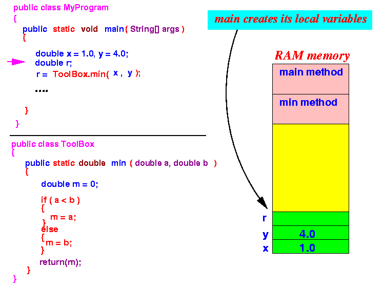
- When execution reaches the
method call ToolBox.min(x,y),
the Pass-by-value mechanism
first creates the
parameter variables:
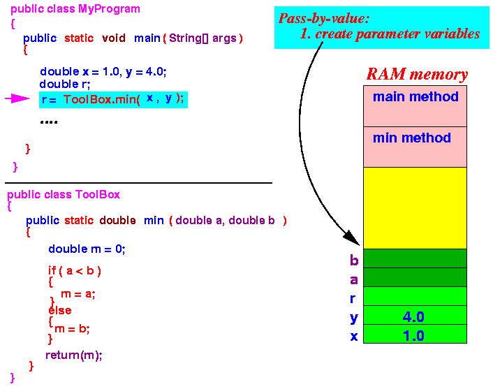
- Then
the Pass-by-value mechanism
copies the value of
the
actual parameter to
the corresponding
formal parameter:
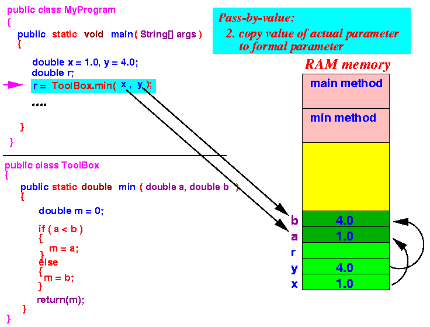
- The method invocation mechanism is
completed as usually with
the following steps:
- Save the return address on the
stack:
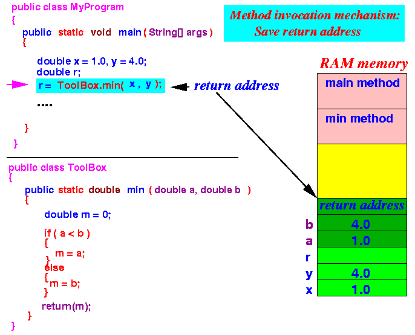
- Jump to the called method:
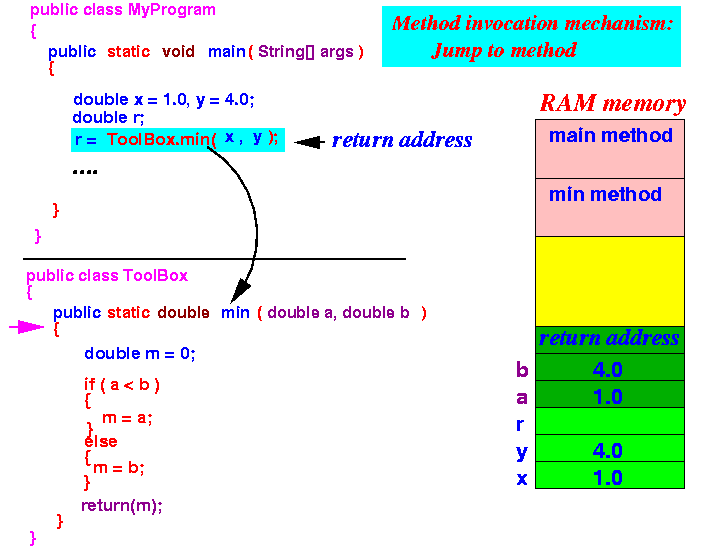
- When the min method executes,
it will create its local variable
m:
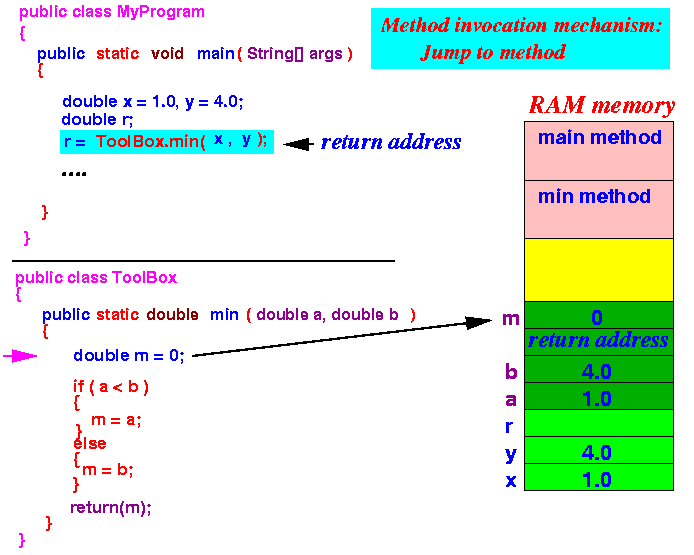
- Save the return address on the
stack:
- Notice how the called method
uses the parameter variables:
- When the called method uses
a parameter variable, the
information is
obtained directly from
the parameter variable:
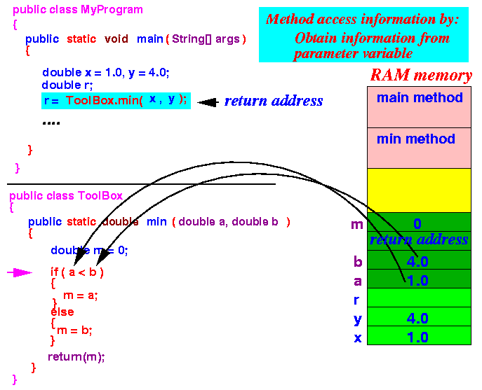
- When the called method uses
a parameter variable, the
information is
obtained directly from
the parameter variable:
- Consider the following program:
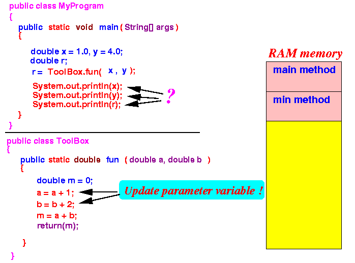 Questions:
- What value is printed by the statement System.out.println(x); ?
- What value is printed by the statement System.out.println(y); ?
- What value is printed by the statement System.out.println(r); ?
- Example Program:
(Demo above code)

- Prog file: click here
- Prog file: click here
How to run the program:
- Right click on links and
save in a scratch directory
- To compile: javac MyProgram.java
- To run: java MyProgram
Output of the program:
1.0 (the value in x is UNCHANGED !) 4.0 (the value in y is UNCHANGED !) 8.0 (= 2.0 + 6.0)
Did you understand why the update statements "a = a + 1" and "b = b + 2" did not update the actual parameters x and y ???
- Notice the similarities between
the ToolBox.min and
the ToolBox.fun
methods:
public static double min ( double a, double b ) { double m = 0; if ( a < b ) { m = a; } else { m = b; } return(m); }public static double fun ( double a, double b ) { double m = 0; a = a + 1; b = b + 2; m = a + b; return(m); }Both methods have 2 parameter variables and 1 local variable
I have constructed the quiz in such a way that I can re-use the diagrams from the Pass-by-value example above.
- So according to the
Pass-by-value example above,
when the ToolBox.min method
starts running, the following
variables have been
created on the System Stack:
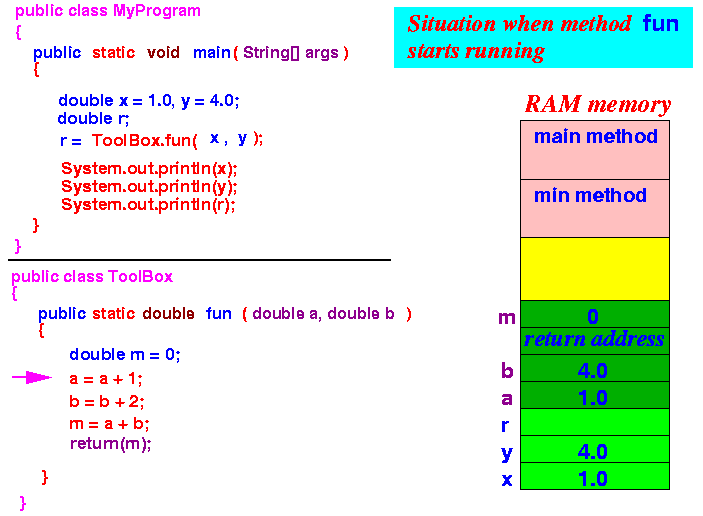
- Notice that:
- The local variables x and y in the main method and
- The parameter variables a and b in the fun method
are different variables (they occupy different memory cells !)
- The assignment statements:
a = a + 1; b = b + 2;
will change the values of the parameter variables:
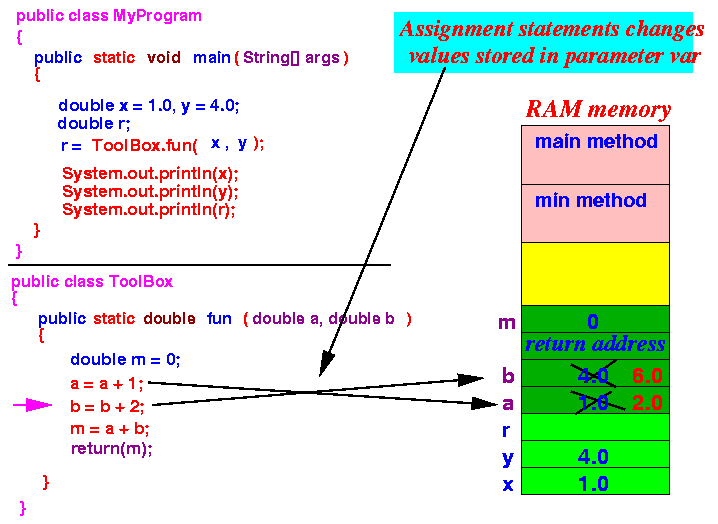
- Notice that:
- The values in the
actual parameters (x and
y)
are unchanged !!!
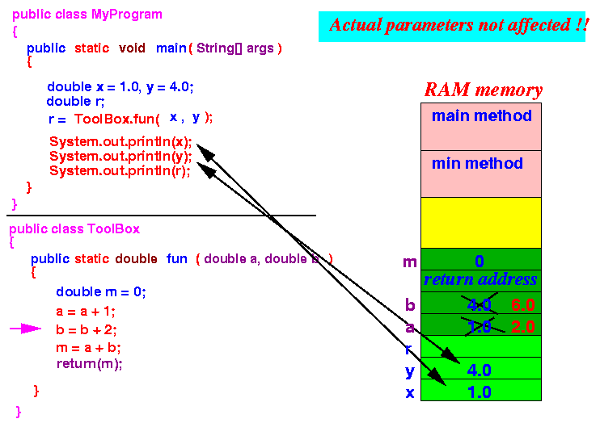
That's why the statements
System.out.println(x); ---> prints 1.0 System.out.println(y); ---> prints 4.0
- The values in the
actual parameters (x and
y)
are unchanged !!!
- Now, consider the following program:
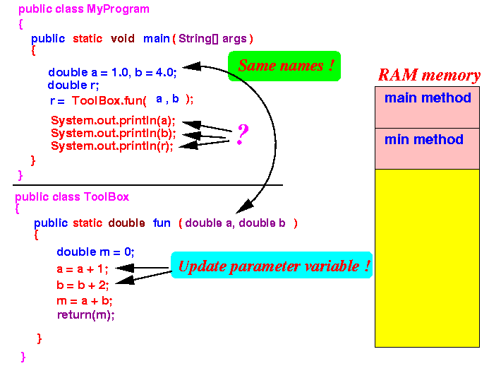 We use the same names for actual and formal parameters !!!
Questions:
- What value is printed by the statement System.out.println(a); ?
- What value is printed by the statement System.out.println(b); ?
- What value is printed by the statement System.out.println(r); ?
- Example Program:
(Demo above code)
- Prog file: click here
- Prog file: click here
How to run the program:
- Right click on links and
save in a scratch directory
- To compile: javac MyProgram.java
- To run: java MyProgram
Output of the program:
1.0 (the value in a is UNCHANGED !) 4.0 (the value in b is UNCHANGED !) 8.0 (= 2.0 + 6.0)
Did you understand why the update statements "a = a + 1" and "b = b + 2" (that updates the formal parameters) did not update the actual parameters a and b ???
- Recall that:
- Different method scopes are
always
disjoint scopes
- You can define different variables with the same name in disjoint scopes (See: click here )
In other words:
- The local variables named a and b defined inside the main method and
- The parameter variables named a and b defined inside the fun method
are different variables
- Different method scopes are
always
disjoint scopes
- The following diagram shows the fact that there are
2 different variables
with the same name
created
created on the System Stack:
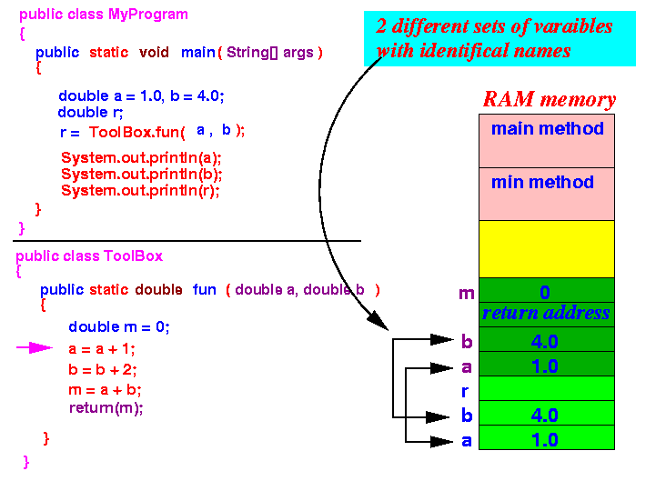
- Notice that:
- The blue colored variables named a and b are inside the scope of the main method and
- The magenta colored variables named a and b are inside the scope of the fun method
are different variables --- it's possible because of the scopes are non-overlapping (furthermore, they use different memory cells !)
- The assignment statements:
a = a + 1; b = b + 2;
will change the values of the parameter variables:
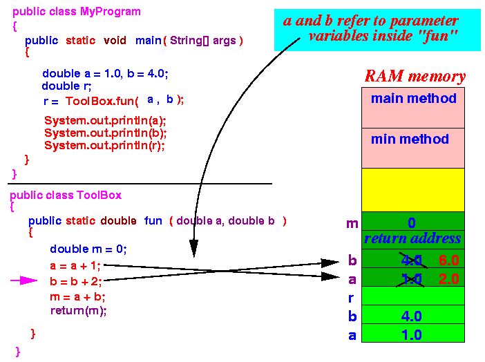
- Notice that:
- The values in the
actual parameters (a and
b)
are unchanged !!!
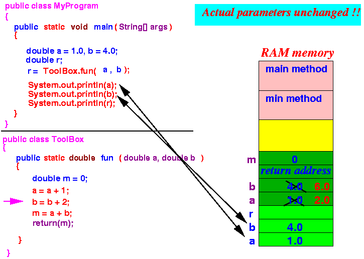
That's why the statements
System.out.println(a); ---> prints 1.0 System.out.println(b); ---> prints 4.0
- The values in the
actual parameters (a and
b)
are unchanged !!!